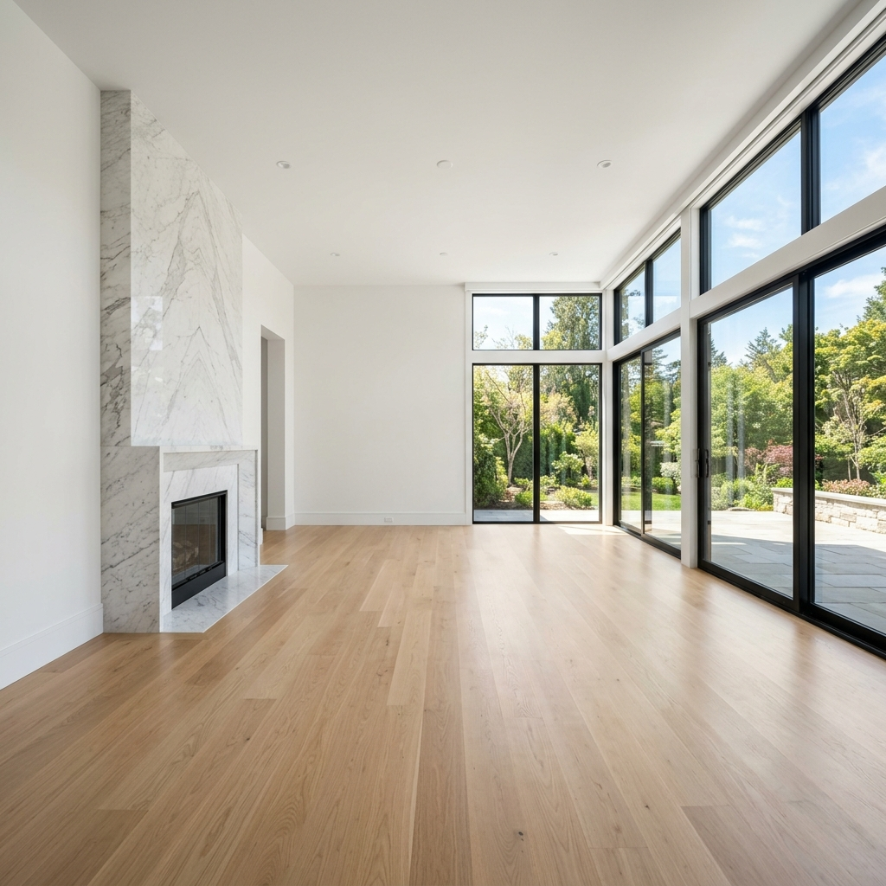

Immersive Gallery.
Minimal Substance.
Home 3 presents an editorial, split-screen canvas designed for elevated architectural presentation. Toggle templates, explore interactive visual coordinates, and find structural calm.
Material Matrix
A tactile board pairing our natural wood selections and organic textiles with their structural coordinates and environmental tokens.


CAD Outlines
Explore the blueprint dimensions and structural draft specifications of the signature Sven Dining Table.
Spatial Dialogue
A conversation with our chief designer regarding the architectural purpose behind structural quietness and split vistas.
"Why does Kave emphasize pinned visual anchors over continuous scroll lists?"
"A split screen maintains structural calm. The left panel offers visual breathing room—an unchanging window of light and shadow—allowing you to inspect specifications on the right without visual fatigue. It mirrors physical architectural blueprints."
Press Musings
How design editors and architecture critics perceive the split vertical collections of Kave.
Architectural Digest"Kave redefines the digital catalog format. The split cover layout is a lesson in quiet minimalism."
Elle Decor"Japan-Nordic design meets warm material density. Each piece feels like an organic sculpture."
Timber Lifecycle
We track every piece of Baltic white oak from the sustainably managed forest to the final unlacquered coating.

Harvested in FSC-certified Baltic forests under strict preservation regulations.

Seasoned in zero-emission kiln chambers for 12 weeks to stabilize internal moisture.

Waxed by hand with organic VOC-free linseed oils to preserve the oak's tactile grain.
Acoustic Spectrum
Our pieces are engineered to balance room resonance. Inspect the noise reduction coefficients (NRC) of our primary materials.
Lux Coordinates
Recommended illumination levels and color rendering values to achieve optimal structural depth with Kave finishes.
Color Proportions
We structure our collections using the classical 60-30-10 interior design rule to secure light harmony and structural breathing room.
Alabaster Travertine. Fosters reflective luminosity and spatial expanse.
Spruce Green / Matte Oak. Anchors the visual profile with organic density.
Unlacquered Brushed Brass. Attracts focused gaze to joint lines.
Locking Joinery
Our solid wood tables utilize traditional nail-free locking joinery, relying on pure mechanical friction for lifelong load stability.
Hand-chiseled with zero wood-screws. Permits natural timber expansion and contraction across shifting humidity seasons.
Grain Directory
The direction of lumber cutting defines its stability and visual grain pattern. Here is how we selection-match each component part.
Straight, parallel grain lines cut at 30-60 degree angles. Offers maximal warp resistance for structural legs.
Classically curved grain arcs tracing the growth rings of the oak. Showcases active organic shadow movements on sideboards.
Circulation Metrics
Architectural metrics defining recommended clearance paths around our furniture to preserve flow and volume breathing room.
Abrasion Metrics
Martindale rub counts measuring fabric endurance under pressure. Our organic fibers are rated for long lifecycle resilience.
Restoration Flow
Kave solid frames are constructed for easy disassembly and restoration, extending their lifespan across generations.
Thermal Values
Thermal insulation indexes defining warmth retention and air flow permeability. Built to naturally balance body heat levels across shifting climate seasons.
Timber Moisture
Oak timber naturally breathes and expands depending on room humidity. Here is how our mechanical joint tolerances absorb climate swings.
Complimentary Atelier Delivery
FSC wooden pieces delivered via carbon-neutral transport.
Atelier Frame Warranty
10-year warranty covering frame and structural joinery details.